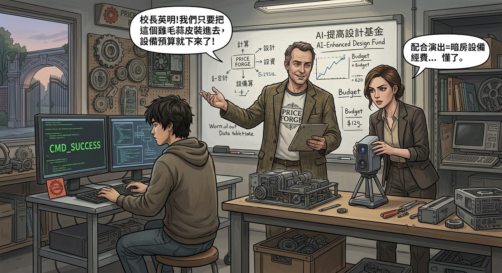

AI 元年

登場人物小記
科技老師 Mr. Callahan——在布萊克威爾教了快二十年書的老油條,深諳「上頭要什麼,就演什麼」的生存之道。他早就看透,學校經費的多寡,從來不是取決於教學品質,而是取決於能不能把任何雞毛蒜皮的小事,包裝成校長能拿去邀功的「成果」。嘴上永遠掛著「校長英明」,心裡打的算盤永遠是設備預算。
藝術老師 Ms. Whitfield——剛從師範學院畢業,滿懷理想主義,一開始堅信「藝術教育不該向流行低頭」,對校長的 AI 政策嗤之以鼻。直到被 Callahan 老師點破「配合演出=暗房設備經費」的現實邏輯後,眼神以肉眼可見的速度從「憤慨」轉為「精明」,展現出驚人的適應能力。
科技宅同學 Kenji——機房常駐居民,平時幾乎不主動跟人說話,講話惜字如金、面無表情,像是把所有情緒都調成了靜音模式。技術能力毋庸置疑,全校的電腦問題,最後都會繞一圈找到他頭上。他討厭麻煩,更討厭被要求解釋自己「為什麼這樣做」——通常直接甩一行指令,不廢話。
一、校長室的靈光一閃
事情的起源,是校長 Wells 某天參加完一場「教育科技高峰論壇」回來,整個人像是被雷劈過一樣兩眼放光,當天下午就在全校教職員會議上宣布:
「布萊克威爾學院,即日起,全面擁抱 AI!」
台下一片面面相覷。
「我剛在論壇上聽到一句話,」Wells 校長激動地敲著講台,「『不用 AI 的學校,就是在教學生用馬車追高鐵』——這句話說得太好了!所以,從這學期起,我要求每一門課,不管是什麼科目,都必須融入 AI 元素!這是布萊克威爾的轉型元年!」
坐在後排的新任藝術老師舉手:「呃,校長,我教的是版畫和暗房沖印,我們……不是藝術學院嗎?」
「藝術更需要 AI!」Wells 校長毫不猶豫,「你就教他們怎麼用 AI 生成圖片,啟發靈感!這是跨時代的融合!」
新藝術老師張了張嘴,還想爭辯什麼,卻被旁邊的科技老師悄悄拉住袖子。
「校長英明!」科技老師率先鼓掌,笑容燦爛得像在拍宣傳照,「這絕對是布萊克威爾邁向未來的關鍵一步!」
會議結束後,科技老師特意堵住了還在生悶氣的藝術老師,壓低聲音:「別跟他犟,你想想,只要我們把『AI 教學成果』包裝得漂亮點,鎮政府那邊的教育補助款,還有那幾個開發商家長的『自願捐款』,今年鐵定能多批一筆——你那個暗房設備不是一直缺經費升級嗎?」
藝術老師愣了一下,眼神瞬間亮了:「……你的意思是?」
「順著校長的意思演一齣,」科技老師拍拍他肩膀,笑得意味深長,「大家都輕鬆。」
藝術老師秒懂,鄭重地跟他握了握手。
二、AI 通識課
於是全校多了一門新課:「AI 通識與創新思維」,由科技老師親自授課,教學生怎麼用生成式 AI 寫作業、修圖、做簡報。
Chloe 一開始興趣缺缺,趴在桌上打瞌睡,直到科技老師示範了一下怎麼用 AI 快速生成各種文字內容,還提到「甚至可以模擬特定語氣和格式,寫得像模像樣」時,她眼睛忽然亮了。
下課後,她拉著 Max 咬耳朵:「妳說,如果我用這玩意,模仿學校廣播那種正經八百的官方語氣,寫一份東西,會怎樣?」
「妳想幹嘛?」Max 已經有種不祥的預感。
「妳等著看好戲就對了。」
二之二、機房裡的低語
隔天的實作課,教室後排的電腦座位,Chloe 拖了張椅子坐到 Kenji 旁邊,狀似隨意地開口:
「欸,」她壓低聲音,「如果我想讓我寫的東西,直接發到全校廣播系統,理論上要怎麼做?純粹好奇。」
Kenji 頭也沒抬,手指在鍵盤上敲了幾下,似乎壓根沒被這個問題嚇到——好像每天都有人來問他這種「純粹好奇」的問題。
「廣播系統跟教務處公告欄用同一組後台。」他的語氣平淡得像在讀說明書,「密碼是預設的,沒人改過。」
「……妳怎麼知道?」
「上學期修過空調就順便看到了。」他把螢幕轉過來一點,飛快打出一行指令,「這樣,登入,貼文字,設定發布時間,完事。時間戳記得延遲十分鐘再發,人不會在現場。」
整個過程不到一分鐘,沒有多餘的廢話,沒有問「妳要幹嘛」,也沒有半點猶豫——像是遞一把螺絲起子那麼自然。
Chloe 看著螢幕上那行簡潔到近乎優雅的指令,忍不住多看了他兩眼:「你都不問我要拿這個做什麼?」
「不關我的事。」Kenji 終於側頭看了她一眼,面無表情,「但如果妳被抓到,我沒說過這句話。」
「懂,懂。」Chloe 用力點頭,一臉「你是懂行的人」的敬佩。
坐在另一排的 Max 隔著兩張桌子把這一切看在眼裡,臉色已經開始發白。下課鈴一響,她立刻衝過去堵住 Chloe。
「妳到底要幹嘛?」
「沒事沒事,」Chloe 笑得心虛,眼神飄忽,「就是……純粹學術交流。」
「Chloe Price。」
「好啦好啦,」Chloe 舉起雙手投降,「我保證,不會鬧出什麼大事。」
Max 盯著她看了足足三秒,那個笑容裡藏著的興奮完全遮不住。
她心裡瞬間浮現一個念頭:完了。
「妳這個保證,」Max 幽幽地說,「大概跟妳說『這次真的最後一根煙』一樣可信。」
Chloe 只是笑,沒有反駁——這本身就是最好的答案。
三、廣播事件
隔天早上第一節課,全校廣播系統忽然插播了一段訊息,語氣一本正經,格式完全模仿學校平時的緊急通知:
「各位同學、教職員請注意,現在進行本學期第三次校園安全疏散演習。請依照以下指示行動:
一、請所有教職員放下手邊工作,思考『我們今天融入 AI 了嗎』,若答案為否,請立即前往校長室反省。
二、根據最新統計,布萊克威爾學院本學期 AI 融入課程數量,已成功超越隔壁瓦特金斯高中『整整零堂』,特此表揚校長高瞻遠矚的治校方針。
三、若您對『暗房課加 AI』『體育課加 AI』『午餐菜單加 AI』等創新教學法感到困惑,請放心,校方也一樣困惑。
四、本次演習純屬虛構,如有雷同,不甚榮幸。请大家假裝什麼都沒發生,繼續上課。」
整個校園瞬間陷入一種詭異的寂靜,接著是此起彼伏、拚命憋著的笑聲。
校長室裡,Wells 校長聽著這段廣播,臉色由紅轉青,猛地一拍桌子站起來。
「這是誰幹的!」他吼道,「馬上給我查出來!」
四、消除證據行動
消息很快傳到 Max 耳朵裡——她其實早就猜到八九分是誰幹的好事,匆匆忙忙拉著 Chloe 躲到圖書館角落。
「妳瘋了嗎?」Max 壓低聲音,「妳知道這種事一旦被查出來,妳會被退學嗎?」
「值得。」Chloe 一臉沒有半點悔意,「妳沒看到 Wells 那張臉,我這輩子沒這麼爽過。」
Max 扶額,轉頭去找學校裡公認的電腦高手——一個平時窩在機房、幾乎沒人跟他說過話的科技宅同學。
「拜託你了,」Max 幾乎是拜託帶哀求的語氣,「幫我把後台的操作紀錄清乾淨,拜託拜託。」
那個科技宅同學推推眼鏡,看了她一眼,又看了眼站在旁邊、明顯就是嫌疑人卻毫無悔意地嚼著口香糖的 Chloe,嘆了口氣。
「……看在妳們是唯一會正眼看我的人份上。」他坐到電腦前,手指飛快地敲打鍵盤,「這次算我欠妳的,下次別再這麼刺激了。」
半小時後,伺服器後台的操作紀錄被清理得乾乾淨淨,連時間戳都被巧妙地錯位處理,看起來像是系統本身的異常,而非人為入侵。
Max 長長舒了一口氣,差點沒給那個科技宅同學跪下磕頭。
五、危機公關
證據雖然沒了,Wells 校長還是氣得不肯罷休,把科技老師和藝術老師一起叫進校長室,要求「不查出兇手誓不甘休」。
「校長,」科技老師率先開口,臉上堆滿了經過精心設計的興奮,「我剛才詳細檢查了系統,有個好消息要跟您報告。」
「什麼好消息?」Wells 校長皺眉。
「這次廣播入侵事件,」科技老師一臉正經,「其實是我們 AI 通識課的教學成果展現!有位同學透過這學期學到的 AI 提示工程技巧,不僅成功模擬出以假亂真的官方語氣,還意外發現了廣播系統長年存在的安全漏洞!」
藝術老師在旁邊立刻接話,語氣充滿了「與有榮焉」的驕傲:「這位同學等於是自發性地進行了一次『白帽測試』,幫學校找出了資安隱患!換個角度想,校長,這證明您推動 AI 教育的方向完全正確——連校園安全都因此受益了!」
Wells 校長的表情從憤怒漸漸轉為將信將疑,又慢慢染上一絲得意。
「你是說……」他摸著下巴,「這其實是我教育理念成功的證明?」
「千真萬確。」科技老師肅然點頭,「而且發現漏洞的學生本人已經深刻反省,願意配合校方低調處理,不再追究——這正好展現了布萊克威爾學生『負責任的科技素養』,也是校方 AI 教育的另一項具體成果。」
Wells 校長沉默了幾秒,臉上的怒氣一點一點消散,取而代之的是一種近乎陶醉的滿足感。
「很好,」他終於點頭,「這件事……就這樣處理。順便,把這個案例整理一下,我要親自寫進下學期的招生簡章。」
科技老師和藝術老師交換了一個心照不宣的眼神,異口同聲:「校長英明。」
六、隔天的報紙
隔天,鎮上地方報紙的頭版,赫然印著一張 Wells 校長站在布萊克威爾校門口、笑容滿面比讚的照片,標題斗大地寫著:
《前瞻教育典範:布萊克威爾學院校長引領 AI 教學革新,學生自發性資安測試獲全國矚目》
內文洋洋灑灑寫了整整一版,盛讚 Wells 校長「高瞻遠矚的治校理念」「勇於擁抱科技浪潮的教育家精神」,還引用了一段據說是「不願具名的資深教師」的評語:「Wells 校長的領導,讓我們看見了教育的未來。」
Chloe 拿著那份報紙,坐在圖書館角落,笑得快岔氣。
「這他媽是我這輩子看過最離譜的公關洗白。」她把報紙遞給 Max,「我惡搞廣播,最後變成他的政績?」
Max 也忍不住笑出聲,一邊翻著報紙一邊搖頭:「這大概就是形式主義的終極型態吧——不管妳做了什麼,最後都能被包裝成『領導英明』。」
「那我下次乾脆——」
「不行。」Max 眼疾手快地捂住她的嘴,「妳這次全靠運氣加上一個好心的宅男救回來,別得寸進尺。」
Chloe 含糊地哼了兩聲,眼睛卻笑得彎彎的,顯然完全沒把「別得寸進尺」這句話聽進去。
圖書館窗外,布萊克威爾學院的旗幟在風裡飄著,底下是一群完全搞不懂「AI 融入體育課」到底該怎麼上、卻還是得乖乖交作業的學生們,繼續著這場荒誕又真實的日常。
七、戰績分享大會
放學後,Chloe 拉著那份報紙,直奔 Warren 家客廳——上次跑團的老地方。Warren 和 Brooke 正在擺骰子,準備開下一局。
「你們絕對想不到,」Chloe 一屁股坐下,把報紙拍在桌上,像是在展示戰利品,「這次的廣播惡搞,是我幹的。」
Warren 湊過去看標題,眼鏡都快貼到報紙上:「等等——那個瘋傳的『AI 融入體育課』疏散通知,是妳?!」
「本尊親自出馬。」Chloe 得意地翹起二郎腿,把整件事添油加醋地講了一遍,從校長的靈光一閃講到報紙頭版的荒謬洗白,講得眉飛色舞。
Brooke 聽得目瞪口呆:「妳怎麼知道怎麼駭進廣播後台的?我以為妳連自己的 Wi-Fi 密碼都要問我。」
「這個嘛,」Chloe 拍拍身邊的空位,「說到這個,我帶了個人來。」
Kenji 從門口探進頭來,一如既往地面無表情,手裡拎著一袋洋芋片,像是被拖來卻又不太抗拒。
「這位是 Kenji,」Chloe 隆重介紹,「機房大神,今天的技術總監,沒有他我早就被 Wells 抓包退學了。」
Kenji 淡淡地舉了下手當作打招呼,找了個角落坐下,自顧自地打開洋芋片。
Warren 眼睛瞬間一亮,像是找到了知音:「你會寫腳本嗎?我一直想做一個自動擲骰模擬器,測試機率分佈——」
「會。」Kenji 難得地多說了一個字以上,「妳的 DM 螢幕邏輯有漏洞,我看到了。」
「什麼漏洞?!」Warren 瞬間炸毛,湊過去追問。
Brooke 在旁邊笑倒,轉頭看向 Chloe:「妳這是又撿回來一個隊友?」
「算是吧。」Chloe 咧嘴一笑,往嘴裡塞了把洋芋片,「這年頭,能全身而退幹壞事,靠的不是運氣,是找對隊友。」
Max 從門口探進頭,看到這一幕——原本安靜的機房邊緣人,此刻正跟 Warren 熱烈討論著什麼演算法,Brooke 已經開始翻找新的骰子準備開團,Chloe 則叼著洋芋片一臉滿足地看著這幅意外組成的隊伍——忍不住笑著搖了搖頭。
「妳知道嗎,」她走過去,在 Chloe 身邊坐下,「妳惹的麻煩,最後總是能變成朋友。」
「這叫魅力。」Chloe 得意地攬住她的肩膀,「不用謝。」
骰子滾動的聲音再次響起客廳裡,這場荒誕的 AI 元年鬧劇,意外地為這個小小的宅圈,添了一位新成員。